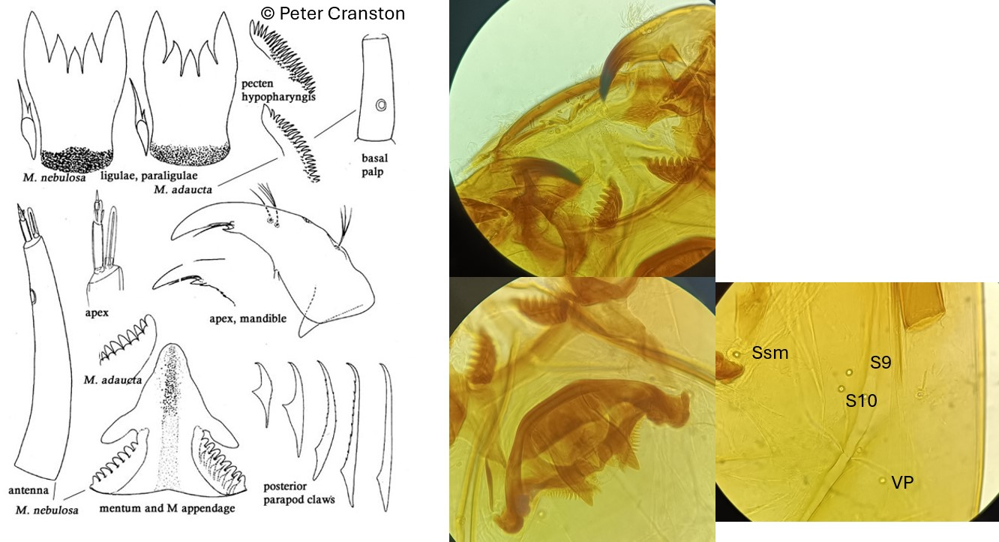

Macropelopia (Thienemann, 1916)

Indice Céphalique
0.73-0.80.
Ratio antennaire
6.5.
Mandibules
Mandibules minces, modérément courbées. Dent apicale 3 fois plus longue que la largeur basale. Mola avec une dent distale et une ou plusieurs dents marginales. Une petite dent dorso-latérale.
Tubules anaux
4 plutôt longs et coniques
Procercus
environ 3-4.5x plus long que large, avec 9-15 soies apicales
Parapode postérieur
Griffes simples, parfois avec des dents fines rapprochés sur la face interne et/ou externe ; et des plus petites griffes simples, faiblement courbées.
Soies céphaliques ventrales
SSm entre S9 et S10. VP distinctement postérolatérale.
Ecologie
Les larves de Macropelopia vivent au sein des sédiments fins dans des eaux froides (sources, ruisseaux, lacs et tourbières).
Espèces recensées en France
3 : M. adaucta, M. monilis, M. notata